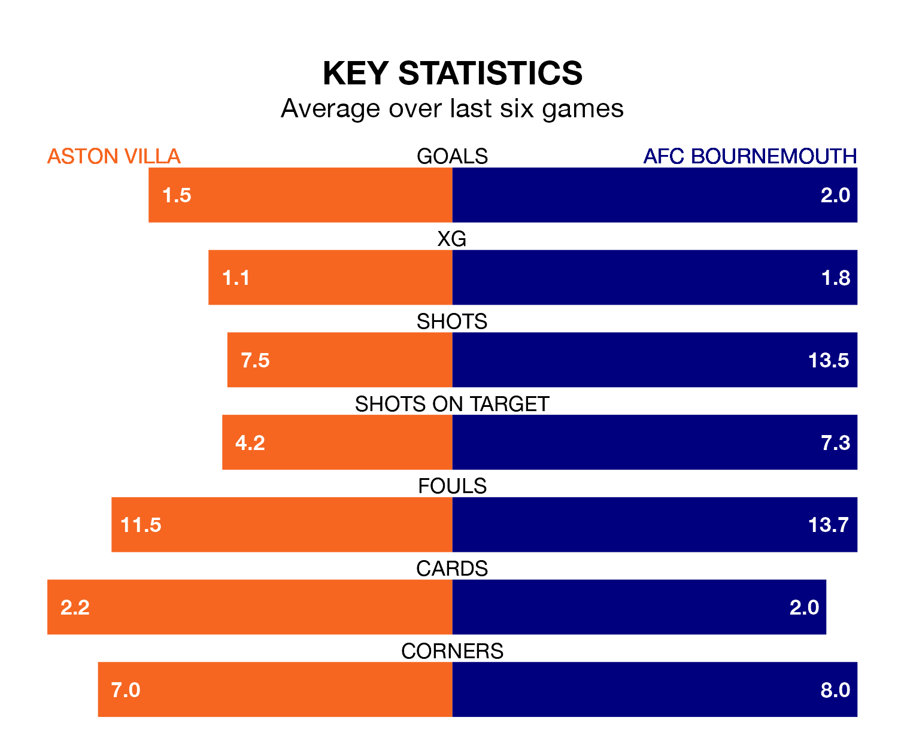

Aston Villa host AFC Bournemouth on Sunday at Villa Park in the Premier League.
In their last league match, on April 14, Villa beat Arsenal 2-0 away, with goals from Leon Bailey and Ollie Watkins.
Bournemouth drew, 2-2 at home against Manchester United on April 13, with Dominic Solanke and Justin Kluivert on the scoresheet.
With 68 goals in 33 games so far this season, Villa are scoring more than average in the league with 2.1 goals per game. And they are conceding fewer than average, letting in 49 goals at a rate of 1.5 per game.
Bournemouth, meanwhile, are below average scorers, with 1.5 goals per game, compared to a league average of 1.6. They have conceded 1.8 goals per game.
In Watkins, the Villa have one of the league's most on-form strikers so far this season. He has notched 19 goals in 32 appearances, to sit second in the scoring charts.
His goal rate of one every 147 minutes is quicker than that of Solanke-Mitchell, the Cherries's top scorer with a goal every 168 minutes, and a total of 17 goals in 32 games.
In the last 10 years, Villa and Bournemouth have played each other on eight occasions. Villa won three of them, Bournemouth four, and they drew once.
On average, the Villa scored 1.4 goals and the Cherries 1.4 in those matches.
Their last meeting was on December 3, when they played out a 2-2 draw.
The hosts are fourth in the table after 33 games, of which they have won 19 and drawn six, earning 63 points.
The away team are nine places behind Villa in 13th, with 11 wins and nine draws putting them on 42 points.
Villa are in mixed form in the Premier League, with two wins and two draws from their last six games.
With three wins and two draws over that period, Bournemouth's form is better – they have taken 11 points from 18, compared to the Villa's eight.
Updated: 11:31 (UTC), 15/04/24